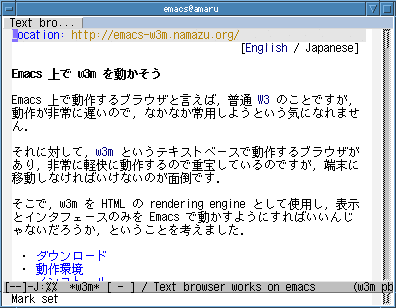

<!DOCTYPE HTML PUBLIC "-//W3C//DTD HTML 4.01 Transitional//EN">
<html lang="ja">
<head>
<meta http-equiv="Content-Type" content="text/html; charset=ISO-2022-JP">
<title>Text browser works on emacs</title>
</head>
<body bgcolor="#EEEEEE">
<p align="right">[<a href="index-en.html">English</a> / Japanese]</p>

<h1>Emacs $B>e$G(B w3m $B$rF0$+$=$&(B</h1>

<p>
Emacs $B>e$GF0:n$9$k%V%i%&%6$H8@$($P!$IaDL(B
<a href="http://www.cs.indiana.edu/elisp/w3/docs.html">W3</a>
$B$N$3$H$G$9$,!$F0:n$,Hs>o$KCY$$$N$G!$$J$+$J$+>oMQ$7$h$&$H$$$&5$$K$J$l$^$;$s!%(B
</p>
<p>
$B$=$l$KBP$7$F!$(B<a href="http://w3m.sourceforge.net/">w3m</a>
$B$H$$$&%F%-%9%H%Y!<%9$GF0:n$9$k%V%i%&%6$,$"$j!$(B
$BHs>o$K7Z2w$KF0:n$9$k$N$G=EJu$7$F$$$k$N$G$9$,!$(B
$BC<Kv$K0\F0$7$J$1$l$P$$$1$J$$$N$,LLE]$G$9!%(B
</p>
<p>
$B$=$3$G!$(Bw3m $B$r(B HTML $B$N(B rendering engine $B$H$7$F;HMQ$7!$(B
$BI=<($H%$%s%?%U%'!<%9$N$_$r(B Emacs $B$GF0$+$9$h$&$K$9$l$P$$$$$s$8$c$J$$$@$m$&$+!$(B
$B$H$$$&$3$H$r9M$($^$7$?!%(B
</p>

<ul>
 <li><a href="#download">$B%@%&%s%m!<%I(B</a>
 <li><a href="#requirements">$BF0:n4D6-(B</a>
 <li><a href="#install">$B%$%s%9%H!<%k(B</a>
 <li><a href="#config">$B@_Dj(B</a>
 <li><a href="info/emacs-w3m-ja.html">$B;H$$J}(B</a>
 <li><a href="#mailing_list">$B%a!<%j%s%0%j%9%H(B</a>
 <li><a href="#link">$B%j%s%/=8(B</a>
 <li><a href="#members">$B3+H/<T(B</a>
 <li><a href="#report">$BO"Mm@h(B</a>
</ul>





<p>
XEmacs $B$^$?$O(B Emacs21 $B$G$O2hA|$N%$%s%i%$%sI=<($,2DG=$G$9!%(B
<a href="w3m-vs-w3.png">$B$I$A$i$,K\J*$+(B</a>$B8+Hf$Y$F$_$F$/$@$5$$!%(B
$BF0:n$9$kMM;R$r6qBNE*$K8+$F$_$?$$J}$O!$(B
<a href="http://namazu.org/~satoru/x11rec/">x11rec</a>
$B$G;#1F$7$?(B<a href="video.gif">$B%S%G%*(B</a>$B$r$4Mw$/$@$5$$!%(B
</p>


<hr>
<h2><a name="download">$B%@%&%s%m!<%I(B</a></h2>
<ul>
 <li>$B0BDjHG(B
     <ul>
      <li><code><a href="emacs-w3m-1.4.tar.gz">emacs-w3m-1.4.tar.gz</a></code> (2004$BG/(B4$B7n(B29$BF|(B)
     </ul>
 <li>$B5lHG(B
     <ul>
      <li><code><a href="w3m_el-1.0.tar.gz">w3m_el-1.0.tar.gz</a></code> (2001$BG/(B5$B7n(B9$BF|(B)
      <li><code><a href="w3m_el-1.2.tar.gz">w3m_el-1.2.tar.gz</a></code> (2001$BG/(B11$B7n(B6$BF|(B)
      <li><code><a href="w3m_el-1.2.1.tar.gz">w3m_el-1.2.1.tar.gz</a></code> (2001$BG/(B11$B7n(B12$BF|(B)
      <li><code><a href="w3m_el-1.2.2.tar.gz">w3m_el-1.2.2.tar.gz</a></code> (2001$BG/(B12$B7n(B6$BF|(B)
      <li><code><a href="w3m_el-1.2.3.tar.gz">w3m_el-1.2.3.tar.gz</a></code> (2001$BG/(B12$B7n(B21$BF|(B)
      <li><code><a href="w3m_el-1.2.4.tar.gz">w3m_el-1.2.4.tar.gz</a></code> (2002$BG/(B1$B7n(B8$BF|(B)
      <li><code><a href="w3m_el-1.2.5.tar.gz">w3m_el-1.2.5.tar.gz</a></code> (2002$BG/(B3$B7n(B2$BF|(B)
      <li><code><a href="w3m_el-1.2.6.tar.gz">w3m_el-1.2.6.tar.gz</a></code> (2002$BG/(B3$B7n(B12$BF|(B)
      <li><code><a href="w3m_el-1.2.7.tar.gz">w3m_el-1.2.7.tar.gz</a></code> (2002$BG/(B6$B7n(B3$BF|(B)
      <li><code><a href="w3m_el-1.2.8.tar.gz">w3m_el-1.2.8.tar.gz</a></code> (2002$BG/(B6$B7n(B20$BF|(B)
      <li><code><a href="w3m_el-1.3.tar.gz">w3m_el-1.3.tar.gz</a></code> (2002$BG/(B7$B7n(B7$BF|(B)
      <li><code><a href="w3m_el-1.3.1.tar.gz">w3m_el-1.3.1.tar.gz</a></code> (2002$BG/(B7$B7n(B17$BF|(B)
      <li><code><a href="emacs-w3m-1.3.2.tar.gz">emacs-w3m-1.3.2.tar.gz</a></code> (2002$BG/(B9$B7n(B3$BF|(B)
      <li><code><a href="emacs-w3m-1.3.3.tar.gz">emacs-w3m-1.3.3.tar.gz</a></code> (2002$BG/(B10$B7n(B25$BF|(B)
      <li><code><a href="emacs-w3m-1.3.4.tar.gz">emacs-w3m-1.3.4.tar.gz</a></code> (2003$BG/(B6$B7n(B18$BF|(B)
      <li><code><a href="emacs-w3m-1.3.5.tar.gz">emacs-w3m-1.3.5.tar.gz</a></code> (2003$BG/(B7$B7n(B5$BF|(B)
      <li><code><a href="emacs-w3m-1.3.6.tar.gz">emacs-w3m-1.3.6.tar.gz</a></code> (2003$BG/(B7$B7n(B18$BF|(B)
     </ul>
</ul>
<p>
emacs-w3m $B$O!$(BCVS $B$r;H$C$F6&F13+H/$7$F$$$k$N$G!$(B
$B0J2<$N<j=g$G:G?7$N3+H/HG$,F~<j$G$-$^$9!%(B
</p>
<blockquote>
<pre>
% cvs -d :pserver:anonymous@cvs.namazu.org:/storage/cvsroot login
CVS password:
# $B%Q%9%o!<%I$O@_Dj$5$l$F$$$^$;$s!%C1$K(B Enter/Return $B%-!<$r2!$7$F2<$5$$!%(B
% cvs -d :pserver:anonymous@cvs.namazu.org:/storage/cvsroot co emacs-w3m
</pre>
</blockquote>
<p>
$B$^$?!$(B<a href="http://cvs.namazu.org/emacs-w3m/">ViewCVS</a>
$B$G%=!<%9$r1\Mw$9$k$3$H$b$G$-$^$9!%(B
</p>


<hr>
<h2><a name="requirements">$BF0:n4D6-(B</a></h2>
<p>
emacs-w3m $B$rF0$+$9$K$O:G?7$N(B w3m ($B%P!<%8%g%s(B 0.3.1 $B0J>e(B) $B$,I,MW$G$9!%(B
$B$3$N%W%m%0%i%`$O(B w3m $B$N%P!<%8%g%s$K6/$/0MB8$7$F$$$k$N$G!$4{$K(B
w3m $B$r%$%s%9%H!<%k$7$F$"$k>l9g$O!$$=$l$r3NG'$7$F2<$5$$!%$^$?!$(B
w3m $B$N$h$j?7$7$$%P!<%8%g%s$,%j%j!<%9$5$l$F$$$k$+$I$&$+$r%A%'%C%/$9$k$?$a$K!$(B
$B8x<0$N(B w3m $B%&%'%V%Z!<%8$rK,Ld$9$k$3$H$r$*4+$a$7$^$9(B:
</p>
<ul>
 <li><code><a href="http://prdownloads.sourceforge.net/w3m/">http://prdownloads.sourceforge.net/w3m/</a></code>
</ul>
<p>
emacs-w3m $B$KF1:-$7$FG[I[$5$l$F$$$k(B shimbun $B%i%$%V%i%j$rMxMQ$9$k$?$a$K$O!$(B
FLIM $B$rA0$b$C$F%$%s%9%H!<%k$7$F$*$/I,MW$,$"$j$^$9!%>\:Y$K$D$$$F$O!$(B
Info $B$N!V(B<a href="info/goto.cgi?file=emacs-w3m-ja&node=Shimbun+Library">Shimbun
Library</a>$B!W@a$r;2>H$7$F$/$@$5$$!%(B
</p>
<dl>
 <dt>a) Emacs 21.x
 <dd><p>
     emacs-w3m $B$rF0$+$9$?$a$KM>J,$K%$%s%9%H!<%k$,I,MW$J%b%8%e!<%k$O$"$j$^$;$s!%(B
CVS head $B$N(B Emacs $B$r;H$&>l9g!$$=$l$O(B
2004$BG/(B3$B7n0J9_$N%P!<%8%g%s$G$"$kI,MW$,$"$j$^$9!%(B
     </p>
 <dt>b) Emacs 20.x
 <dd><p>
     emacs-w3m $B$rF0$+$9$?$a$KM>J,$K%$%s%9%H!<%k$,I,MW$J%b%8%e!<%k$O$"$j$^$;$s!%(B
     </p>
     <p>
     <code><a href="ftp://ftp.jpl.org/pub/elisp/bitmap/">BITMAP-MULE</a></code>
     $B%Q%C%1!<%8$r%$%s%9%H!<%k$7$F$*$/$H!$(B
     WEB $B%Z!<%8$N%$%s%i%$%s2hA|$rGr9uI=<($5$;$k$3$H$,$G$-$^$9!%(B
     </p>
 <dt>c) XEmacs
 <dd><p>
     <code>
     <a href="ftp://ftp.m17n.org/pub/mule/apel/apel-10.6.tar.gz">APEL</a>
     </code>
     $B$rA0$b$C$F%$%s%9%H!<%k$7$F$*$/I,MW$,$"$j$^$9!%(B
     </p>
     <blockquote>
      <strong>$BCm0U(B:</strong>
      APEL XEmacs $B%Q%C%1!<%8(B (SUMO $B$K4^$^$l$F$$$^$9(B)
      $B$O;H$($^$;$s!%$b$7$9$G$K(B APEL XEmacs
      $B%Q%C%1!<%8$,%$%s%9%H!<%k$5$l$F$$$k$J$i$P!$$=$l$r>e5-$N%j%s%/$G<($7$?(B
      APEL $B$GCV$-49$($J$1$l$P$J$j$^$;$s!%(B
     </blockquote>
     <p>
     XEmacs 21.x $B$K(B emacs-w3m $B$r%$%s%9%H!<%k$9$k>l9g$O!$I,$:(B
     <code><a href="http://www.lcdf.org/gifsicle/">gifsicle</a></code>
     $B%W%m%0%i%`$b%$%s%9%H!<%k$7$F2<$5$$!%(B
     $B8=:_$9$Y$F$N(B XEmacs 21.x $B$K$O%*%W%F%#%^%$%:$5$l$?%"%K%a!<%7%g%s(B gif
     $B$,@5>o$KI=<($5$l$J$+$C$?$j!$$"$k<o$N%$%s%?!<%l!<%9(B gif
     $B$rI=<($7$h$&$H$9$k$H%/%i%C%7%e$7$F$7$^$&%P%0$,$"$j$^$9!%(B
     emacs-w3m $B$O(B <code>gifsicle</code> $B$rMxMQ$7$F!$(B
     gif $B%G!<%?$r(B XEmacs 21.x $B$G07$($k7A<0$KJQ49$7$^$9!%(B
     </p>
 <dt>d) Mule 2.3 (based on Emacs 19.34)
 <dd><p>
     APEL $B$H!V(B<strong>$B?7$7$$(B custom</strong>$B!W$H(B
     <code>regexp-opt.el(c)</code> $B%b%8%e!<%k$,I,MW$G$9!%>\$7$/$O!$(B
     $B<!$N(B <a href="#requirements_emacs_19.34">Emacs 19.34
     $B$K$D$$$F$N@bL@(B</a>$B$r;2>H$7$F$/$@$5$$!%(B
     </p>
     <p>
     BITMAP-MULE $B%Q%C%1!<%8$rMQ$$$F(B
     WEB $B%Z!<%8$N%$%s%i%$%s2hA|$rGr9uI=<($5$;$k>l9g$K$O!$IUB0$N%Q%C%A(B
     (<code><a href="http://cvs.namazu.org/emacs-w3m/patches/mule-2.3@19.34.patch?rev=1.1&content-type=text/plain">patches/mule-2.3@19.34.patch</a></code>)
     $B$rE,MQ$7$F(B Mule $B$r:n$jD>$9$3$H$r6/$/$*4+$a$7$^$9!%$=$&$7$J$$$H!$(B
     $B9b$$3NN($G(B Mule $B$,8G$^$C$F$7$^$$!$(B
     Mule $B$r(B kill $B$;$6$k$rF@$J$/$J$k$G$7$g$&!%(B
     </p>
 <dt><a name="requirements_emacs_19.34">e) Emacs 19.34 (without MULE)</a>
 <dd><p>
     APEL $B$rA0$b$C$F%$%s%9%H!<%k$7$F$*$/I,MW$,$"$j$^$9!%(B
     </p>
     <p>
     emacs-w3m $B$O(B
    $B!V(B<strong><a href="http://www.dina.kvl.dk/~abraham/custom/">$B?7$7$$(B
     custom</a></strong>$B!W%Q%C%1!<%8$rI,MW$H$7$^$9!%(B
     Emacs 19.34 $B$^$?$O(B Mule 2.3 $B$r;H$C$F$$$k>l9g$O!$(B
     emacs-w3m $B$r%$%s%9%H!<%k$9$kA0$K$=$l$r%$%s%9%H!<%k$7$J$1$l$P$J$j$^$;$s!%(B
     $BFC$K(B Mule 2.3 $B$r;H$&>l9g$O!$(BAPEL $B$KImB0$7$F$$$k(B
     <code><a href="http://cvs.m17n.org/cgi-bin/viewcvs/apel/README.ja?rev=HEAD&content-type=text/plain">README.ja</a></code>
     $B$bI,$:D4$Y$F2<$5$$!%(B
     </p>
     <p>
     $B$^$?!$(Bemacs-w3m $B$O(B <code>regexp-opt.el(c)</code>
     $B%b%8%e!<%k$rI,MW$H$7$^$9$,!$(B
     Emacs 19.34 $B$d(B Mule 2.3 $B$J$I$N8E$$(B Emacsen $B$K$O4^$^$l$F$$$^$;$s!%(B
     $B$"$J$?$,;H$C$F$$$k(B Emacs $B$,3:Ev$9$k>l9g$O!$A0$b$C$F!$0J2<$N$h$&$K(B
     <code>regexp-opt.el(c)</code> $B%b%8%e!<%k$r%$%s%9%H!<%k$9$kI,MW$,$"$j$^$9!%(B
     </p>
<blockquote>
<pre>
% cp attic/regexp-opt.el /usr/local/share/emacs/site-lisp
% cd /usr/local/share/emacs/site-lisp
% emacs -q -no-site-file -batch -f batch-byte-compile regexp-opt.el
</pre>
     <p>
     ($B$b$7(B Mule $B$r$*;H$$$J$i$P!$$*$=$i$/%Q%9L>$d%3%^%s%IL>$H$7$F(B `emacs'
     $B$NBe$o$j$K(B `mule' $B$H8@$&I,MW$,$"$k$G$7$g$&!%(B)
     </p>
</blockquote>
</dl>

<hr>
<h2><a name="install">$B%$%s%9%H!<%k(B</a></h2>
<p>
$B:G=i$K!$(Bemacs-w3m $B$rMxMQ$9$k$?$a$K(B
<a href="#requirements">$BI,MW$J>r7o(B</a>
$B$,K~$?$5$l$F$$$k$+3NG'$7$F$/$@$5$$!%(B
</p>

<dl>
 <dt><h3><a name="install_unix">UNIX $B7O$N4D6-$G%$%s%9%H!<%k$9$k>l9g(B</a></h3>
 <dd><p>
     $B:G=i$K!$(B<code>configure</code> $B%9%/%j%W%H$r<B9T$7$F$/$@$5$$!%(B
     </p>
<blockquote>
<pre>
% ./configure
</pre>
</blockquote>
     <p>
     APEL $B$d(B FLIM $B$J$I$NI,MW$J%b%8%e!<%k$,!$(B
     $BI8=`E*$G$O$J$$%G%#%l%/%H%j$K%$%s%9%H!<%k$5$l$F$$$k>l9g$K$O!$(B
     <em>--with-addpath</em> $B%*%W%7%g%s$r;H$C$F!$(B
     $B$=$l$i$N%G%#%l%/%H%j$r;XDj$9$kI,MW$,$"$j$^$9!%(B
     </p>
<blockquote>
<pre>
% ./configure --with-addpath=/opt/share/apel:/opt/share/flim
</pre>
</blockquote>
     <p>
     $B<!$K!$(Bemacs-w3m $B$rE,Ev$J%G%#%l%/%H%j$K%$%s%9%H!<%k$9$k$?$a!$(B
     $B<!$N%3%^%s%I$r<B9T$7$F$/$@$5$$!%(B
     </p>
<blockquote>
<pre>
% make
# make install
</pre>
</blockquote>
     <p>
     Emacs 21 $B$^$?$O(B XEmacs $B$r;H$C$F$$$k$J$i$P!$(B
     $B%"%$%3%s2hA|$N%U%!%$%k$r%$%s%9%H!<%k$7$?J}$,NI$$$G$7$g$&!%(B
     $B$=$l$r9T$J$&$K$O(B:
     </p>
<blockquote>
<pre>
# make install-icons
</pre>
</blockquote>
     <p>
     <em>install</em> $B$NBe$o$j$K(B <em>install-package</em> $B$r;H$&$H!$(B
     XEmacs $B$N%Q%C%1!<%8$H$7$F%$%s%9%H!<%k$9$k$3$H$b$G$-$^$9!%(B
     </p>
<blockquote>
<pre>
% make
# make install-package
</pre>
</blockquote>
     <p>
     $B$3$N>l9g(B <em>install-icons</em> $B$r<B9T$9$kI,MW$O$"$j$^$;$s!%(B
     </p>
 <dt><h3><a name="install_nonunix">$BHs(B UNIX $B7O$N4D6-$G%$%s%9%H!<%k$9$k>l9g(B</a></h3>
 <dd><p>
     <code>configure</code> $B%9%/%j%W%H$r<B9T$G$-$J$$$+!$(B
     <code>make</code> $B%3%^%s%I$,MxMQ$G$-$J$$>l9g$O!$(B
     $B0J2<$N%3%^%s%I$r<B9T$7$F$/$@$5$$!%(B
     </p>
<blockquote>
<pre>
# emacs -batch -q -no-site-file -l w3mhack.el NONE -f w3mhack-nonunix-install
</pre>
</blockquote>
     <p>
     APEL $B$d(B FLIM $B$J$I$NI,MW$J%b%8%e!<%k$,!$(B
     $BI8=`E*$G$O$J$$%G%#%l%/%H%j$K%$%s%9%H!<%k$5$l$F$$$k>l9g$K$O!$(B
     $B0J2<$N$h$&$K$=$N%G%#%l%/%H%j$r;XDj$9$kI,MW$,$"$j$^$9!%(B
     </p>
<blockquote>
<pre>
# emacs -batch -q -no-site-file -l w3mhack.el //c/share/apel://c/share/flim -f w3mhack-nonunix-install
</pre>
</blockquote>
</dl>


<hr>
<h2><a name="config">$B@_Dj(B</a></h2>
<p>
$B0J2<$N@_Dj$r(B <code>~/.emacs</code> $B%U%!%$%k$KDI2C$7$F$/$@$5$$!%(B
</p>
<blockquote>
<pre>
(require 'w3m-load)
</pre>
</blockquote>
<p>
$B8e$O!$(B<i>M-x w3m</i> $B$H$9$l$P5/F0$9$k$O$:$G$9!%(B
</p>
<p>
$B$^$?!$(BT-gnus $B$d(B Wanderlust $B$J$I$N(B SEMI MUA $B>e$G!$%a%C%;!<%8Cf$N(B text/html
$B%Q!<%H$r(B emacs-w3m $B$r;H$C$FI=<($5$;$k$K$O!$0J2<$N@_Dj$r(B
<code>~/.emacs</code> $B%U%!%$%k$KDI2C$9$kI,MW$,$"$j$^$9!%(B
</p>
<blockquote>
<pre>
(require 'mime-w3m)
</pre>
</blockquote>
<p>
$B>\$7$/$O!$(B<a href="info/emacs-w3m-ja.html">Info</a> $B$r;2>H$7$F$/$@$5$$!%(B
</p>


<hr>
<h2><a name="mailing_list">$B%a!<%j%s%0%j%9%H(B</a></h2>
<p>
emacs-w3m $B$K$D$$$F$N>pJs8r49$r9T$&$?$a$N%a!<%j%s%0%j%9%H$r3+@_$7$F$$$^$9!%(B
$B;22C$r4uK>$5$l$kJ}$O!$(B<code>emacs-w3m-ctl&#64;namazu.org</code>
$B08$K0J2<$N$h$&$JFbMF$N%a!<%k$rAw$C$F$/$@$5$$!%(B
</p>
<blockquote>
<pre>
subscribe ANATANO Namae
</pre>
</blockquote>
<p>
$B>e5-%5%s%W%kCf$N!V(BANATANO Namae$B!W$H$$$&ItJ,$O!$<B:]$NL>A0$KCV$-49$($F$/$@$5$$!%(B
$B%a!<%j%s%0%j%9%HK\BN$N%"%I%l%9$O!$(B<code>emacs-w3m&#64;namazu.org</code> $B$G$9!%(B
$B$^$?!$%a!<%j%s%0%j%9%H$N2a5n5-;v$b(B<a href="ml/">$B8x3+$5$l$F$$$^$9(B</a>$B!%(B
</p>


<hr>
<h2><a name="link">$B%j%s%/=8(B</a></h2>
<ul>
 <li><a href="http://w3m.sourceforge.net/">w3m</a>
     <ul>
      <li><a href="http://www2u.biglobe.ne.jp/~hsaka/w3m/index-ja.html">w3m-m17n</a>
      <li><a href="http://pub.ks-and-ks.ne.jp/prog/w3mmee/">w3mmee</a>
     </ul>
 <li><a href="http://www.cs.indiana.edu/elisp/w3/docs.html">W3</a>
 <li><a href="ftp://ftp.m17n.org/pub/mule/apel/">APEL</a>
 <li><a href="ftp://ftp.m17n.org/pub/mule/flim/">FLIM</a>
 <li><a href="ftp://ftp.jpl.org/pub/elisp/bitmap/">BITMAP-MULE</a>
 <li><a href="http://www.lcdf.org/gifsicle/">gifsicle</a>
 <li><a href="http://www.dina.kvl.dk/~abraham/custom/">New custom</a>
</ul>


<hr>
<h2><a name="members">$B3+H/<T(B</a></h2>
(50$B2;=g(B)
<ul>
 <li><a href="http://www.nijino.com/ari/">$BM-Bt(B $BL@9((B</a>
 <li><a href="http://www.taiyo.co.jp/~gotoh/">$B8eF#(B $B=S0l(B</a>
 <li><a href="http://www.netlaputa.ne.jp/~hshirai/">$BGr0f(B $B=(9T(B</a>
 <li><a href="http://namazu.org/~satoru/">$B9bNS(B $BE/(B</a>
 <li><a href="http://namazu.org/~tsuchiya/">$BEZ20(B $B2mL-(B</a>
 <li><a href="http://www.gohome.org/teranisi/">$B;{@>(B $BM50l(B</a>
 <li>$B@>ED(B $B7=2p(B
 <li><a href="http://www.yamaoka.cc/">$B;32,(B $B9nH~(B</a>
</ul>
<p>
$BB>$NB?$/$N$_$J$5$s$NB?Bg$J9W8%$K46<U$7$^$9!%(B
</p>


<hr>
<h2><a name="report">$BO"Mm@h(B</a></h2>
<p>
$BIT6q9gJs9p$J$I$O(B <code>emacs-w3m&#64;namazu.org</code> $B08$K$*4j$$$7$^$9!%(B
$B$3$N%a!<%j%s%0%j%9%H$O!$(B
$BEPO?%f!<%6!<0J30$N?M$+$iAw?.$5$l$?%a!<%k$b<u$1IU$1$^$9!%(B
</p>


</body>
</html>
<!-- Local Variables: -->
<!-- use-kuten-for-period: nil -->
<!-- use-touten-for-comma: nil -->
<!-- End: -->
